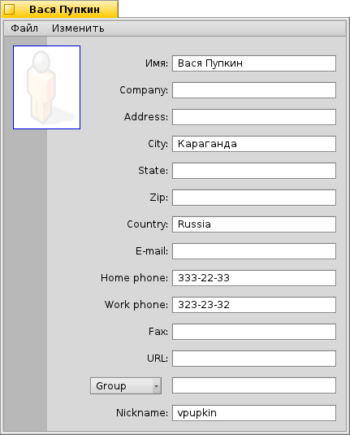
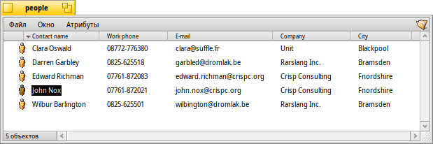

Контакты (People)
Контакты (People)
| Расположение в Deskbar: | ||
| Расположение в Tracker: | /boot/system/apps/People | |
| Настройки хранятся по адресу: | ~/config/settings/People_data |
Контакты - простая программа для хранения контактов, использующая атрибуты файловой системы Haiku для сохранения адресов и другой контактной информации. Каждый контакт сохранён как один персональный файл со всеми данными о нём в виде отдельных атрибутов. Все они проиндексированы и потому доступны для поиска по соответствующему запросу.
Атрибут снизу осуществляет привязку контакта к одной или нескольким группам, что полезно для "массовой рассылки" ряду людей, которые, например, работают над определённым проектом. Выпадающее меню выводит все существующие в настоящее время группы, а если контакт принадлежит более, чем к одной группе, то их названия идут через запятую ",".
Персональные файлы принято сохранять в /boot/home/people/. Чтобы увидеть список всех контактов, откройте папку people и включите все интересующие вас атрибуты. Если же вы хотите хранить персональные файлы в различных папках, то для отображения их всех в одном окне используйте соответствующий поисковый запрос.
Вы можете обращаться с этими файлами, как с любыми другими: сортировать по атрибутам, включая вторичную сортировку (нажать SHIFT во время клика по следующему атрибуту), удалять, переименовывать, копировать и т. д.. Также можно редактировать контактную информацию напрямую: кликнуть по атрибуту (или нажать ALT+E) для его изменения также как при переименовании файла, в режиме редактирования можно премещаться между колонками, нажимая TAB и SHIFT+TAB.